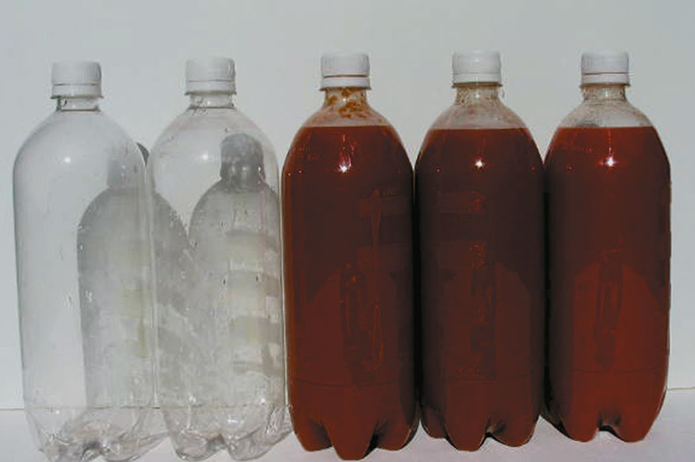
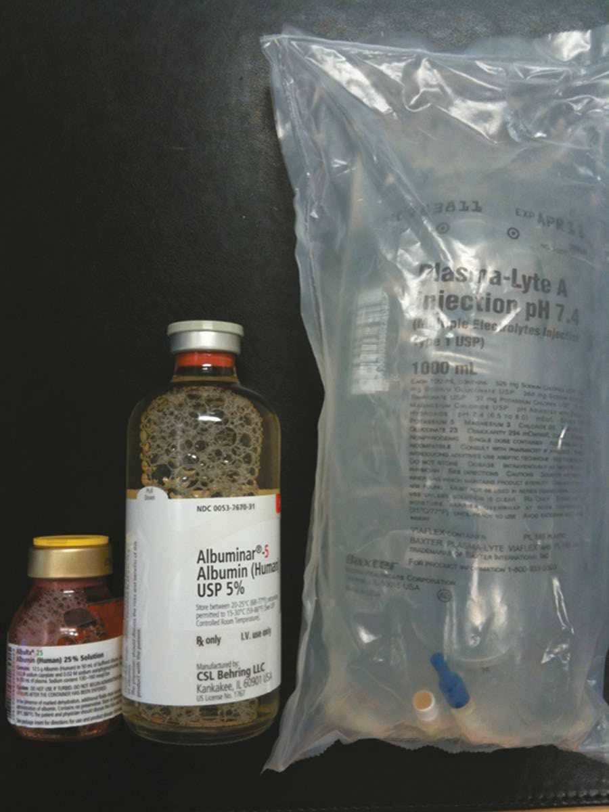

Fluid and Electrolyte Management
Summary
- Fluid and electrolyte management aims to keep the surgical patient neither fluid-depleted nor fluid-overloaded by replacing what is lost, since success in this area can be the difference between an uncomplicated postoperative course and admission to intensive care [1].
- Roughly two-thirds of body weight is water, two-thirds of which is intracellular and one-third extracellular (of which two-thirds is interstitial and one-third intravascular) [2].
- Sodium determines the intracellular/extracellular osmotic gradient and proteins determine plasma/interstitial oncotic pressure, so disorders of fluid balance and of individual electrolytes (sodium, potassium, calcium, magnesium, phosphate) and acid-base status are closely interrelated in the perioperative period [2][3].
Definition
- Total body water is approximately 50–60% of total body weight in adults (60% in young men, 50% in young women), around 80% in newborns falling to about 65% by one year, and should be adjusted down 10–20% in obese individuals and up 10% in malnourished individuals [3].
- Fluid balance is defined against approximate average daily losses: water loss of about 2500 mL/day (insensible loss from skin, respiratory tract, GI tract, and urine), sodium loss of 1–2 mmol/kg/day, and potassium loss of 0.7–1 mmol/kg/day, each increased by pyrexia, diarrhoea, vomiting or high-output fistulae [1].
- Acid-base balance is defined by maintenance of arterial pH between 7.35 and 7.45 through respiratory (PaCO2) and metabolic (bicarbonate) regulation [4].
Pathophysiology
- Water shifts from areas of low solute concentration to areas of high solute concentration to achieve osmotic equilibration; serum osmolality is calculated as (2 × Na) + (glucose/18) + (BUN/2.8), normally 280–295 [2].
- Third-space fluid is interstitial fluid sequestered from the functional extracellular compartment [2].
- Volume overload is most commonly iatrogenic, with weight gain as its first sign [2].
- Isotonic crystalloids remain largely extracellular acutely, whereas colloids (including blood) produce more lasting intravascular volume expansion because crystalloid rapidly redistributes into the interstitium; when crystalloid is used to replace blood loss, 3–4 times the lost volume must be given because only one-quarter to one-third remains intravascular [1].
- Acid-base regulation follows CO2 + H2O ⇌ H2CO3 ⇌ H+ + HCO3⁻, with respiratory compensation occurring within minutes and renal (bicarbonate) compensation over hours to days [2][4].
- Nasogastric suction causes loss of hydrogen and chloride ions from gastric secretions, producing hypochloraemic, hypokalaemic metabolic alkalosis; the kidney's compensatory sodium/hydrogen and potassium/hydrogen exchange produces a paradoxical aciduria [2].

Clinical features
- Assessment of volume status combines history, examination, fluid balance charts, and blood results.
- The "dry" (hypovolaemic) patient feels thirsty, has a dry mouth, low JVP, dry mucous membranes, reduced skin turgor, falling blood pressure, rising pulse, low urine output (<1 mL/kg/h), and a body weight several kilograms below baseline; blood tests show high sodium, potassium, creatinine and disproportionately raised urea [1].
- The "overfilled" patient does not feel thirsty, has a raised JVP, dependent oedema, pulmonary oedema on auscultation, a high central venous pressure that plateaus with fluid challenges, and may have low serum sodium [1].
- Electrolyte-specific clinical features include: hyperkalaemia, peaked T waves progressing to flattened P waves, prolonged PR interval, widened QRS, sine-wave pattern and ventricular fibrillation, with gastrointestinal (nausea, vomiting, colic) and neuromuscular (weakness to ascending paralysis) symptoms [2][3]; hypokalaemia, fatigue, weakness, muscle cramps/twitches, flattened T waves [2]; hyponatraemia, headache, nausea, vomiting, seizures [2]; hypernatraemia, restlessness, irritability, seizures [2]; hypocalcaemia, perioral tingling and numbness (first symptom), hyperreflexia, Chvostek's sign, Trousseau's sign (carpopedal spasm on blood pressure cuff inflation), and prolonged QT interval [2]; hypomagnesaemia, irritability, confusion, hyperreflexia, seizures, resembling hypocalcaemia [2]; hypophosphataemia (classically in refeeding syndrome), failure to wean from ventilator, muscle weakness, confusion [2].
Etiology
- Hyperkalaemia often occurs with renal failure [2].
- Hypokalaemia usually results from over-diuresis or diarrhoea [2].
- Hyponatraemia is usually due to fluid overload with dilute urine, but can also occur from isotonic GI fluid loss compensated by water retention; postoperative causes include excess intraoperative saline infusion, antipsychotic medication, excess oral water intake, and transient decreases (or, less often, syndrome of inappropriate secretion) of antidiuretic hormone; pseudohyponatraemia occurs with hyperglycaemia or hyperlipidaemia [2][3].
- Hypernatraemia is usually due to poor fluid intake with concentrated urine [2].
- Diabetes insipidus (low ADH) causes hypernatraemia with dilute polyuria and can follow alcohol use or head injury; SIADH (high ADH) causes hyponatraemia with concentrated, low-volume urine and can also follow head injury [2].
- Hypercalcaemia is most commonly caused by hyperparathyroidism (most common benign and overall cause) or malignancy (breast cancer most common malignant cause), with undiagnosed hyperparathyroidism plus a stressor such as surgery being the most common cause of hypercalcaemic crisis [2].
- Hypocalcaemia commonly follows parathyroidectomy or previous thyroidectomy (injury to parathyroid glands) [2].
- Hypomagnesaemia typically occurs with massive diuresis, chronic total parenteral nutrition without magnesium replacement, or alcohol abuse [2].
- Metabolic acidosis with an elevated anion gap arises from exogenous acid ingestion (ethylene glycol, salicylate, methanol) or endogenous acid production (ketoacidosis, lactic acidosis, renal insufficiency), summarised by the mnemonic MUDPILES (methanol, uraemia, diabetic ketoacidosis, paraldehydes, isoniazid, lactic acidosis, ethylene glycol, salicylates) [2][3].
- Metabolic acidosis with a normal anion gap arises from loss of bicarbonate via diarrhoea, enteric/pancreatic/biliary fistulae, ureterosigmoidostomy, or renal tubular acidosis, or from rapid infusion of bicarbonate-deficient (high-chloride) fluid [2][3].
- Metabolic alkalosis is usually a contraction alkalosis from fluid loss such as nasogastric suction or over-diuresis with loop diuretics [2].
Diagnosis
- Normal reference ranges: potassium 3.5–5.0 mEq/L, sodium 135–145 mEq/L, calcium 8.5–10.0 mg/dL (ionized 1.0–1.5), magnesium 2.0–2.7 mg/dL, phosphate 2.5–4.5 mg/dL, arterial pH 7.35–7.45, PaCO2 4.7–6.0 kPa, bicarbonate 22–26 mmol/L, base excess −2 to +2 mEq/L [2][4].
- The anion gap = [Na] − [Cl + HCO3], normally <12 mmol/L (or 8–16 mmol/L per Oxford Handbook), and must be corrected for hypoalbuminaemia (corrected AG = actual AG + [2.5 × (4.5 − albumin)]) [3][4].
- The Flenley acid-base nomogram is a diagnostic aid: assess pH first (acidaemia <7.35, alkalaemia >7.45), then check whether PaCO2 and bicarbonate changes are concordant (primary respiratory acidosis if pH<7.35 with PaCO2>6.0 kPa; primary respiratory alkalosis if pH>7.45 with PaCO2<4.7 kPa; primary metabolic acidosis if pH<7.35 with HCO3<22 mmol/L; primary metabolic alkalosis if pH>7.45 with HCO3>26 mmol/L), with discordant changes indicating compensation [6].
- Calculated serum osmolality = 2×Na + glucose/18 + BUN/2.8, normal 280–295 mOsm; each 180 mg/dL rise in glucose raises osmolality by approximately 10 mOsm [2][3].
- Corrected serum calcium: add/subtract 0.8 mg/dL of calcium for every 1 g/dL decrease/increase in albumin from a normal of 4 g/dL [2][3].
- The free water deficit for correcting hypernatraemia is calculated from total body water (estimated as 50% of lean body mass in men, 40% in women) multiplied by (serum sodium − 140)/140 [3].
- Potassium changes with pH: potassium falls by approximately 0.3 mEq/L for every 0.1 rise in pH above normal in alkalosis [3].
- Fractional excretion of sodium (FeNa) is the best test for azotaemia; prerenal failure shows FeNa <1%, urine sodium <20, BUN/creatinine ratio >20, and urine osmolality >500 mOsm [2].
Scoring and Severity
Not covered in source textbooks as a dedicated severity score for fluid/electrolyte disturbance; severity is instead expressed through reference ranges and thresholds for specific electrolytes and acid-base parameters (e.g. hypercalcaemia symptomatic usually above calcium 13; hyperkalaemia ECG progression from peaked T waves to sine-wave arrhythmia) as detailed under Diagnosis and Clinical features above [2].
Treatment and Management
- Maintenance IV fluid can be calculated by the "4-2-1" rule: 4 mL/kg/h for the first 10 kg, 2 mL/kg/h for the second 10 kg, and 1 mL/kg/h for each kilogram thereafter [2].
- For major adult GI surgery, lactated Ringer's (Hartmann's) solution is used intraoperatively and for the first 24 hours, then changed to D5 half-normal saline with 20 mEq K⁺ thereafter, since 5% dextrose stimulates insulin release and limits protein catabolism [2].
- Urine output should be maintained at a minimum of 0.5 mL/kg/h and is the best indicator of adequate volume replacement, but should not itself be "topped up" if it reflects normal postoperative diuresis [2][7].
- Fluid resuscitation is tailored to the source of loss: sweat and gastric losses (e.g. gastric outlet obstruction) are replaced with normal saline; pancreatic, biliary or small-bowel losses with lactated Ringer's (may need added bicarbonate); large-bowel losses (e.g. diarrhoea) with lactated Ringer's (may need added potassium); GI losses are generally replaced volume-for-volume [2].
- Common crystalloids: Hartmann's solution (130 mmol/L Na, 103 mmol/L Cl, 28 mmol/L lactate, 4 mmol/L K, 1.5 mmol/L Ca, iso-osmolar/isotonic); 0.9% normal saline (154 mmol/L Na, 154 mmol/L Cl; large volumes can cause hyperchloraemic acidosis); 5% glucose (no electrolytes, becomes hypotonic as glucose is metabolised, should not be used for volume replacement as it causes hyponatraemia) [1][3].
- Colloids (Gelofusine, albumin) produce more lasting volume expansion than crystalloid but albumin resuscitation can cause pulmonary oedema via increased intravascular oncotic pressure, and hydroxyethyl starch is associated with postoperative bleeding in cardiac/neurosurgical patients [1][3].
- Hypertonic (7.5%) saline is used in closed head injury to increase cerebral perfusion and reduce intracranial pressure/brain oedema, but carries a bleeding risk as an arteriolar vasodilator and should not be used for initial resuscitation of hypovolaemic shock generally [3].
- Hyperkalaemia management: calcium gluconate first (membrane stabilisation, does not lower potassium), then measures that shift potassium intracellularly (sodium bicarbonate, insulin with dextrose, nebulised albuterol) followed by potassium-removing measures (Kayexalate, loop diuretics, dialysis if refractory) [2][3].
- Hyponatraemia: water restriction is first-line for fluid-overload hyponatraemia (then diuresis); correction should proceed no faster than 1 mEq/L/h to avoid central pontine myelinolysis; isotonic-loss hyponatraemia is treated with isotonic fluids [2].
- SIADH is managed with fluid restriction and slow diuresis first-line, with conivaptan/tolvaptan (vasopressin V2-receptor antagonists) if refractory; diabetes insipidus is managed with free water first-line and DDAVP if refractory [2].
- Hypercalcaemia is treated with normal saline (200–300 mL/h) followed by furosemide once euvolaemic, avoiding lactated Ringer's (contains calcium) and thiazide diuretics (retain calcium); malignancy-related hypercalcaemia may need calcitonin, bisphosphonates, glucocorticoids or dialysis [2].
- Hypocalcaemia and hypomagnesaemia often need magnesium repletion before calcium will correct [2].
- Respiratory acidosis is treated by increasing minute ventilation; respiratory alkalosis by lowering minute ventilation.
- Metabolic acidosis treatment targets the underlying cause, keeping pH above 7.20 with bicarbonate if needed (correction of acidosis can precipitate hypokalaemia).
- Metabolic alkalosis from nasogastric losses is treated with normal saline to correct the chloride deficit [2].
- Insensible fluid losses average 10 mL/kg/day (75% skin, 25% respiratory), increased by fever, burns, large open wounds, and mechanical ventilation [2].
- Neonatal maintenance fluids require 10% glucose with appropriate electrolytes per local NICU protocol, with watch kept for hyperglycaemia and hypernatraemia (which increases intraventricular haemorrhage risk in preterm infants), and nasogastric/stoma losses over 15 mL/kg/day replaced millilitre-for-millilitre with 0.9% NaCl plus 0.15% KCl [8].

Surgeries
Not covered in source textbooks, fluid and electrolyte management is a medical/perioperative supportive discipline rather than an operative procedure in the source texts; dialysis is referenced as a treatment for refractory hyperkalaemia and severe acid-base/electrolyte derangement rather than a "surgery" per se [2].
Complications
- Uncorrected severe electrolyte derangement produces cardiac arrhythmia (hyperkalaemia progressing to sine-wave pattern and ventricular fibrillation; severe hypocalcaemia causing decreased cardiac contractility and heart failure) [2][3].
- Overly rapid correction of hyponatraemia risks central pontine myelinolysis [2].
- Excessive normal saline administration can cause hyperchloraemic metabolic acidosis [1][2].
- Albumin used for resuscitation can precipitate pulmonary oedema [3].
- Correction of acidosis can lead to hypokalaemia [2].
- Contrast-induced and myoglobin-associated (rhabdomyolysis) acute renal failure are recognised complications requiring fluid-based prevention/treatment strategies (prehydration, bicarbonate and N-acetylcysteine for contrast; hydration and urinary alkalinisation for myoglobinuria) [2].
- Tumour lysis syndrome, precipitated by treatment of leukaemias/lymphomas, produces hyperphosphataemia, hyperkalaemia, hyperuricaemia and hypocalcaemia, and can cause acute renal failure [2].
- Chronic renal failure produces hyperkalaemia, hypermagnesaemia, hyperphosphataemia, elevated urea/creatinine, hyponatraemia, hypocalcaemia (from reduced active vitamin D and calcium-binding protein) and anaemia (from reduced erythropoietin) [2].

Prognosis
Not covered in source textbooks as a distinct prognosis statement independent of the underlying cause of fluid/electrolyte derangement; the source texts frame outcome in terms of the specific disorder (e.g. hyperkalaemia progressing to fatal arrhythmia if untreated, hypercalcaemic crisis being life-threatening, tumour lysis syndrome risking acute renal failure) rather than giving an overall prognosis figure for fluid and electrolyte management as a topic [2].
References
- Oxford Handbook of Clinical Surgery, 5th ed., Fluid management
- The ABSITE Review, 2022, Ch. 9; verified by Schwartz's ABSITE Ch. 3 describing a positive Trousseau-type sign as hypocalcaemia
- Schwartz's Principles of Surgery: ABSITE and Board Review, Ch. 3 Fluid and Electrolyte Management of the Surgical Patient
- Oxford Handbook of Clinical Surgery, 5th ed., Acid–base balance
- Sabiston Textbook of Surgery, 22nd ed., Ch. 33
- Oxford Handbook of Clinical Surgery, 5th ed., Acid–base balance, Fig. 2.7
- Oxford Handbook of Clinical Surgery, 5th ed., Fluid optimization
- Bailey & Love's Short Practice of Surgery, 28th ed., Ch. 18 Neonatal surgery